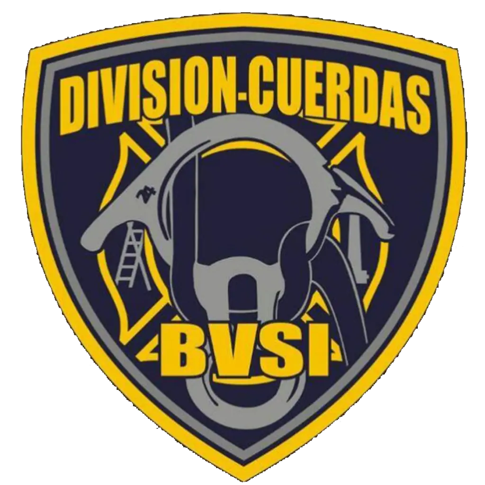
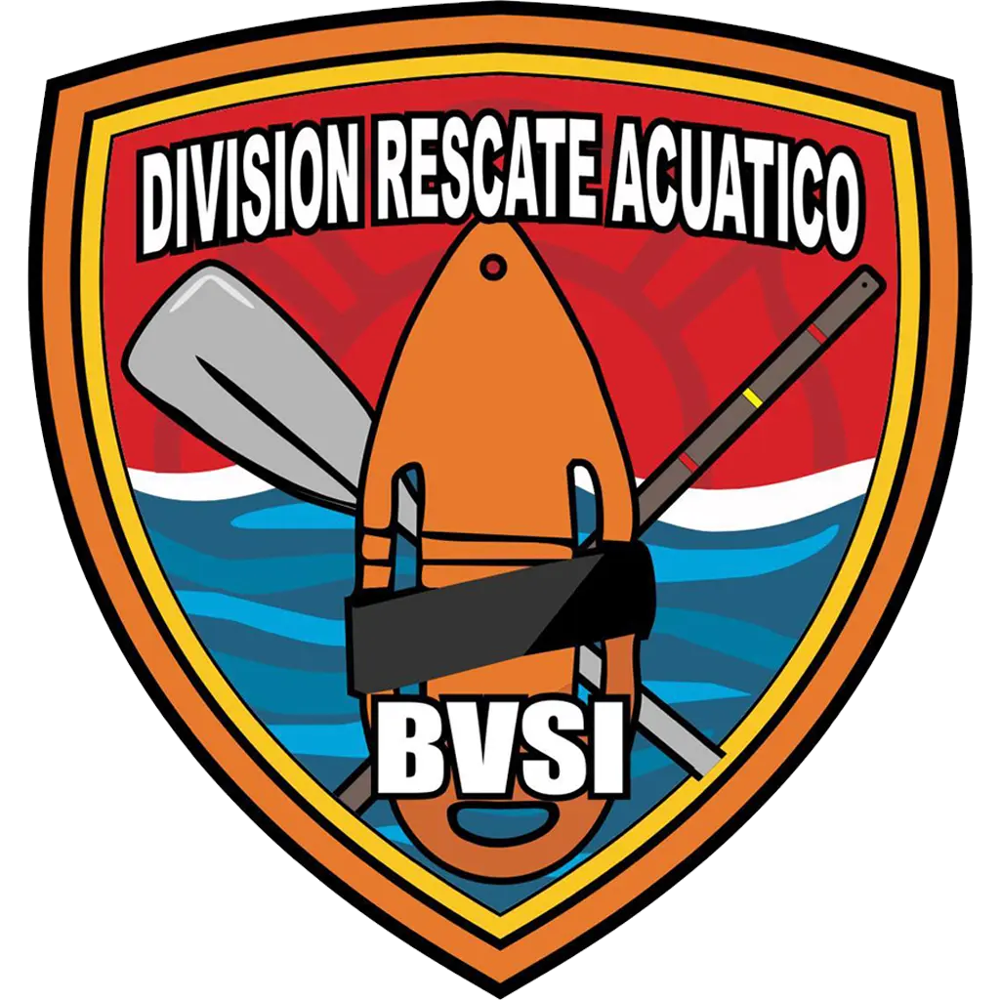
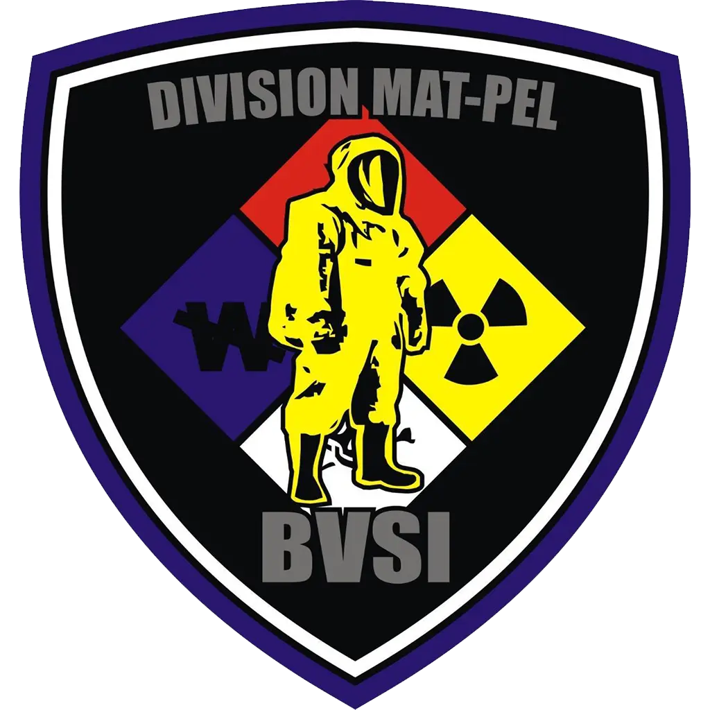
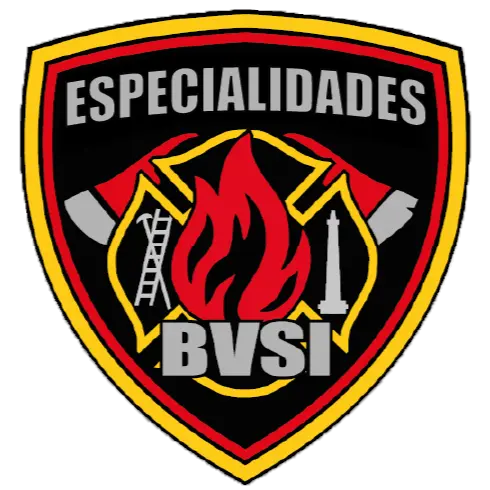
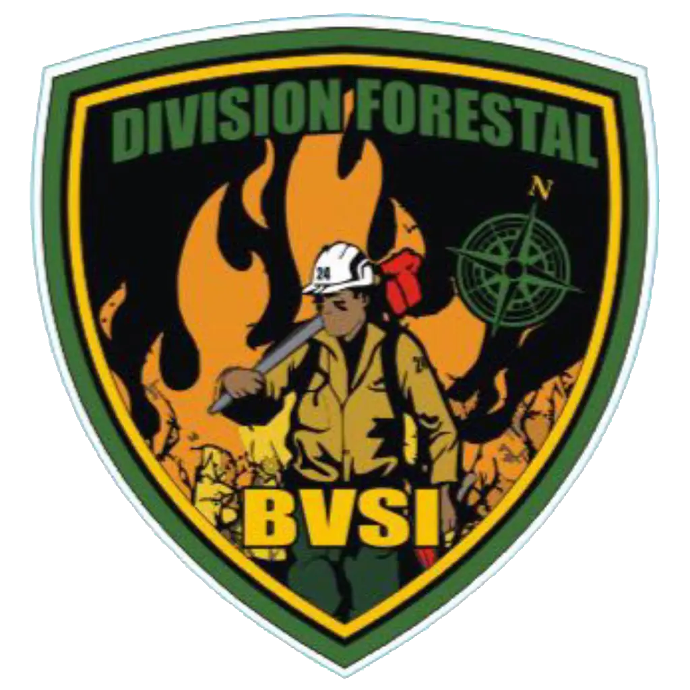

Nuestras Especialidades
Capacitación, preparación y trabajo en equipo ante diferentes escenarios de emergencia.
Las distintas especialidades permiten profundizar conocimientos y técnicas para afrontar situaciones que requieren una preparación específica.
Rescate en altura
Intervenciones en altura y entornos de difícil acceso.
La preparación en esta especialidad está orientada al trabajo en lugares elevados o de acceso complejo, donde el desplazamiento y la asistencia requieren técnicas específicas de seguridad y rescate.
Sistemas de cuerdas · Acceso y progresión · Seguridad de intervinientes

Rescate vehicular
Técnicas y herramientas para intervenciones en siniestros viales.
El rescate vehicular aborda situaciones en las que es necesario acceder a ocupantes de vehículos involucrados en incidentes, mediante procedimientos de estabilización, acceso y extracción coordinada.
Estabilización · Acceso a víctimas · Extricación

Buceo y salvamento acuático
Preparación para la respuesta en medios acuáticos.
Esta especialidad contempla la capacitación para intervenir en escenarios vinculados con el agua. Las tareas requieren evaluación del entorno, coordinación del personal y aplicación de protocolos específicos.
Salvamento acuático · Buceo · Seguridad operativa


Materiales peligrosos (HAZMAT)
Identificación de riesgos y actuación ante incidentes con sustancias peligrosas.
La formación en materiales peligrosos se centra en el reconocimiento de amenazas, la protección del personal y la adopción de medidas iniciales adecuadas ante incidentes que involucren sustancias de riesgo.
Reconocimiento · Aislamiento · Protección

Urban Search and Rescue (USAR)
Preparación para la búsqueda y el rescate en estructuras dañadas o colapsadas.
La especialidad USAR está vinculada con la localización y el rescate de personas en escenarios de colapso estructural, en los que la evaluación de riesgos y el trabajo coordinado son fundamentales.
Evaluación de estructuras · Búsqueda · Rescate

Incendios forestales
Capacitación para la intervención en incendios de vegetación.
Esta especialidad comprende conocimientos y técnicas destinados a las intervenciones ante incendios forestales y de vegetación, considerando las características del terreno y las condiciones cambiantes del fuego.
Comportamiento del fuego · Herramientas · Seguridad

Una misma vocación de servicio
Más allá de sus diferentes campos de formación, todas las especialidades comparten un objetivo: fortalecer la preparación y el trabajo conjunto al servicio de la comunidad.
Conocer el Cuerpo Activo